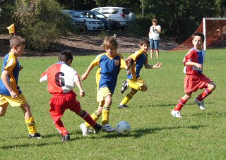
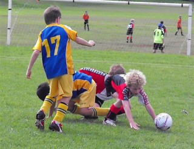
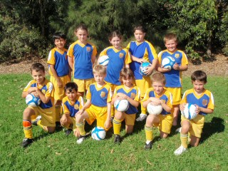

| Match Report - 18 April 2009 |
|
|
|
|
|
|
|
|
|
|

The 9-1's had their first ever competition game and came out on top with a 2 - 0 win.
All the boys supported each other throughout a fast paced match, going from end to end.
In the first half Eli had a couple of shots on goal, narrowly missing both times.
Shannon saved a couple of goals, which allowed Thomas Maclean to make a break from his
position in the backs, with a WPH player quickly gaining ground. Thomas managed to keep
ahead and get a great shot in to the goals for a lead of 1 - 0 at half time.
A change of goalie saw Charlie move back into the goals and he was quickly into the
match with some saves and a lucky off-side call for North Ryde to see a nil score line
against us. Harrison made some great kicks into space to set up Shannon for a goal where
he had to beat 2 players and then the goalie. This made the score 2 - 0 to us. Jack made
some great runs down the left hand side and David some good cross kicks.
Well done to all the boys for a fantastic match against a very strong side. Thanks to
Eli's brother Zac for being linesman and to Adam's sister Nadia for assisting us at
training over the last couple of weeks. Bring on Round 3!
- Pauline Condon (Coach)
|
|
|
|
|
|

What a great start to the season by a team that was so committed to work as a team
that it paid dividends. The players even talked at half time why it was so important
to help each other!
We dominated the game & when the Dragons broke against the run of play there were
always players prepared to support in defence. Whilst we pushed players forward &
played much more attacking football it was great to see the midfielders like Sam
coming back to support. Some solid tackling from players like Andrhea, Ryan & Satya
made our defence impenetrable. Thomas S in goals for the first half produced some
excellent distribution to his team mates to get them moving. It's easy to do big
kicks upfield but Thomas made quick kicks to players he could see were in space &
each kick found it's mark precisely. Tommy O played in goals the second half but
there were few breaks from the Dragons so it was pretty quiet up that end.
With Liam & Hamish away this week we only had one reserve but all the boys & girls
put in 110%. Our team shape & passing has improved with many of the players looking
for someone in space to move forward.
Peter attacked on the right wing for most of the first half & caused a lot of trouble
to the opposing defenders. He nearly opened the scoring after 5 minutes with a shot
across goal that came back into play off the post. Rhea proved troublesome & as usual
found her herself in the right spot to complete the 2 goals in the first half. Oscar
continues to cause problems for the defence with his bustling runs & Matthew as usual
was solid in defence & with probing passes from the midfield.
It was hard to pick players of the week as all the team played so well but special
mention this week to Peter for the skills he showed & space he found in attack & Sam
for the excellent all round effort.
Let's keep up the good work & improvement through the year to see us create more
scoring opportunities.
- Allan Ball (Asst Coach)
|
|
|
|
|
|

The North Ryde U9 / 6's romped home to a 7-0 win over the Carlingford Redbacks at
James Henty Park in what was essentially a one-sided affair. The predicted rain held
off thankfully and the sunny dry conditions made for an open free-flowing match.
The first half was underway and with an official referee for the first time and the
offside rule being enforced, the throng of supporters didn't quite know what to expect.
Ben dutifully kept goal in the first half and could have
taken a book out with him, as the play was mostly well away from the North Ryde goal.
When called into action Ben made an excellent save and two great W-kicks.
Julian was more than safe in defence and made an excellent
dribbling run and pass and a nice long kick. Lucy defended
really well and her pass to Brooke was top notch. Brooke made
a perfect pull-back and ran herself ragged all day. Tom made
more than a few long dribbling runs which were a sight to behold. I bet he slept well
Saturday night.
With the second half came a goalkeeping change. Having made some great defending plays
in the outfield, Saxon took the gloves and made two excellent
saves and W-kicks. Tim made some excellent tackles, passed to
his teammates and his throw in was textbook perfect. Josh made
some very solid tackles, a very memorable one that saved a real goal chance, that was great!
Christopher ran himself to a stand still, made a great throw
in and a really good pass to Tom. Massie seemed to be everywhere
making some good runs with the ball and an excellent down the line pass.
Benyad's passing and dribbling were excellent also and on two
occasions made an excellent switch pass to centre field.
Guys, that was an excellent performance. It looked like you all had a lot of fun which
is by far the main reason we play each week. Great to see so many family and friends
there to yell their support, everyone appreciated you being there.
Goalscorers: Christopher 4, Massie 2, Tom 1
See you all at training!
- Tony (Coach)
|
|
|
|
|
|
A sunny morning and shiny dew greeted the teams with a clear blue sky, a good day for
soccer.
The NRS team only had 11 players for this match while WPH had a few reserves. The game
started with WPH scoring one easy goal only a few meters out and in front of the goal
line. Elia was in good form as he ran and dribbled past WPH on numerous occasions and
was unlucky not to score. WPH capitalised on a rogue pass just in front of the goal area
with a strong kick to make it 2-0. Nat, our goal keeper, was having his hands full with
the wet ball and did well in the slippery conditions. The game was closer than the
score indicated.
In the second half, with some position changes, Chris Butterfield went up the middle
and scored, much to the delight of the rest of the team! Lewis was in goals and managed
to keep the goals blocked. Kyle, Daniel, Ben & Hayden all played well and Eman and Mana
were putting in a strong second half. There was another position change with Elia put
into goals and Lewis back to stopper. Luke managed to score a good goal to start his
account for the season. The final score was 4-2 but the game was a lot closer.
It will be an interesting game when they next meet on the 13/6/2009.
- Joe Rosenfels (Manager)
|
|
|
|
|
|
In our first up game we suffered a 9 - 1 loss. A disappointing though not a totally
unexpected result given the disrupted start to the season, 2 key players being absent
and the sometimes disappointing attendance at training. There were some pleasing
aspects to the game with determined performances by some players. Leo W in particular
had a strong game in defence and was considered player of the game, William G in goals
made 17 saves some of which were quite courageous and the score would have been a lot
worse if not for his efforts. Sam B played strongly for the full game despite nursing
a thigh injury suffered mid week. Lewis B put in his usual full game effort however he
was closely marked throughout. Stephen B-H scored our goal with a good finish after
some enterprising team play late in the second half. The fact that the team tried to
the very end was probably the most encouraging aspect of the game and every player put
in their best efforts until the final whistle. A special thank you to the 2 under 14s
who filled in for us on the day Tyrone and Robert, you both played strongly and your
efforts were appreciated very much.
One thing is clear after this game! There needs to be a commitment from all players to
the team and regular attendance at training from here on in. The side that beat you on
Saturday were more committed,fitter,well drilled and prepared to play as a team; these
are only things that come through coaching,practice and team training. That was the
difference on the day. You boys are a team that has heaps of individual talent but
skills need to be sharpened and a team work approach and attitude needs to be adopted
if you are going to be successful at this level. There are three training sessions
between now and our next match on 9th May and we need 100% attendance and commitment
at all sessions between now and then and I am sure if that is the case we will reverse
this result in our next game.Heads up you can do it!
- Bill Greer (Manager)
|